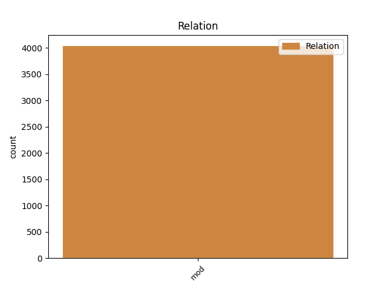
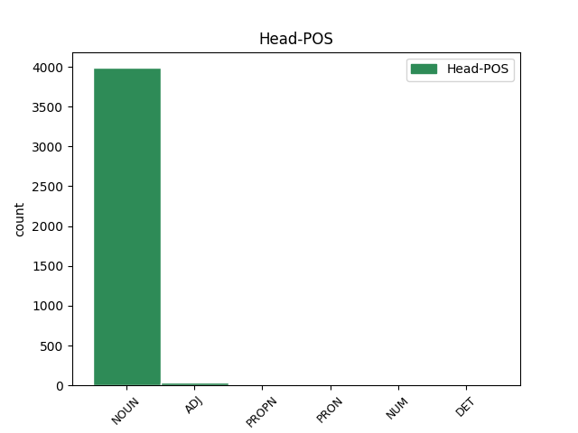
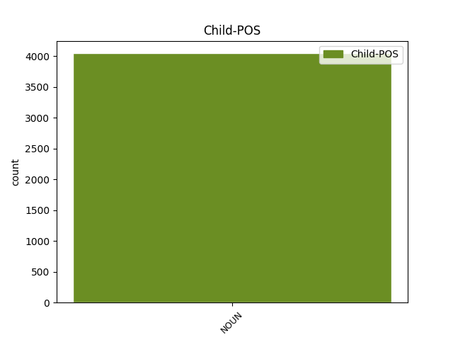

Distribution of features within this leaf



Agreement Rules sorted by frequency.
- When the dependent token is the modifer(mod) of the head token, and the dependent token is NOUN.
1 Avtor _ _ _ _ 0 _ _ _
2 Čarobnic _ _ _ _ 0 _ _ _
3 dr. _ _ _ _ 0 _ _ _
4 Mirko _ _ _ _ 0 _ _ _
5 Zupančič _ _ _ _ 0 _ _ _
6 je _ _ _ _ 0 _ _ _
7 dan _ _ _ _ 0 _ _ _
8 po _ _ _ _ 0 _ _ _
9 premieri _ _ _ _ 0 _ _ _
10 v _ _ _ _ 0 _ _ _
11 novogoriškem _ _ _ _ 0 _ _ _
12 gledališču _ _ _ _ 0 _ _ _
13 prejel _ _ _ _ 0 _ _ _
14 srebrni _ _ _ _ 0 _ _ _
15 častni _ _ _ _ 0 _ _ _
16 znak _ _ _ _ 0 _ _ _
17 Svobode svoboda NOUN Ncfsg Case=Gen|Gender=Fem|Number=Sing 0 _ _ _
18 Republike republika NOUN Ncfsg Case=Gen|Gender=Fem|Number=Sing 17 mod _ Dep=17|Rel=Atr
19 Slovenije _ _ _ _ 0 _ _ _
20 . _ _ _ _ 0 _ _ _
Disagree Examples:
1 " _ _ _ _ 0 _ _ _
2 Tistega _ _ _ _ 0 _ _ _
3 večera _ _ _ _ 0 _ _ _
4 sem _ _ _ _ 0 _ _ _
5 preveč _ _ _ _ 0 _ _ _
6 popil _ _ _ _ 0 _ _ _
7 , _ _ _ _ 0 _ _ _
8 zgodilo _ _ _ _ 0 _ _ _
9 se _ _ _ _ 0 _ _ _
10 je _ _ _ _ 0 _ _ _
11 mesec mesec NOUN Ncmsan Animacy=Inan|Case=Acc|Gender=Masc|Number=Sing 0 _ _ _
12 dni dan NOUN Ncmpg Case=Gen|Gender=Masc|Number=Plur 11 mod _ Dep=11|Rel=Atr
13 po _ _ _ _ 0 _ _ _
14 tem _ _ _ _ 0 _ _ _
15 , _ _ _ _ 0 _ _ _
16 ko _ _ _ _ 0 _ _ _
17 sem _ _ _ _ 0 _ _ _
18 izvedel _ _ _ _ 0 _ _ _
19 , _ _ _ _ 0 _ _ _
20 da _ _ _ _ 0 _ _ _
21 me _ _ _ _ 0 _ _ _
22 žena _ _ _ _ 0 _ _ _
23 vara _ _ _ _ 0 _ _ _
24 . _ _ _ _ 0 _ _ _
1 V _ _ _ _ 0 _ _ _
2 bolnišnici _ _ _ _ 0 _ _ _
3 bodo _ _ _ _ 0 _ _ _
4 uvedli _ _ _ _ 0 _ _ _
5 tudi _ _ _ _ 0 _ _ _
6 s _ _ _ _ 0 _ _ _
7 šolo _ _ _ _ 0 _ _ _
8 za _ _ _ _ 0 _ _ _
9 starše _ _ _ _ 0 _ _ _
10 , _ _ _ _ 0 _ _ _
11 ki _ _ _ _ 0 _ _ _
12 je _ _ _ _ 0 _ _ _
13 namenjena _ _ _ _ 0 _ _ _
14 vzgoji _ _ _ _ 0 _ _ _
15 in _ _ _ _ 0 _ _ _
16 izobraževanju izobraževanje NOUN Ncnsd Case=Dat|Gender=Neut|Number=Sing 0 _ _ _
17 nosečnic nosečnica NOUN Ncfpg Case=Gen|Gender=Fem|Number=Plur 16 mod _ Dep=16|Rel=Atr
18 in _ _ _ _ 0 _ _ _
19 njihovih _ _ _ _ 0 _ _ _
20 partnerjev _ _ _ _ 0 _ _ _
21 . _ _ _ _ 0 _ _ _
1 V _ _ _ _ 0 _ _ _
2 bolnišnici _ _ _ _ 0 _ _ _
3 so _ _ _ _ 0 _ _ _
4 že _ _ _ _ 0 _ _ _
5 pred _ _ _ _ 0 _ _ _
6 časom _ _ _ _ 0 _ _ _
7 pripravili _ _ _ _ 0 _ _ _
8 vse _ _ _ _ 0 _ _ _
9 potrebno _ _ _ _ 0 _ _ _
10 za _ _ _ _ 0 _ _ _
11 negovanje negovanje NOUN Ncnsa Case=Acc|Gender=Neut|Number=Sing 0 _ _ _
12 bolnikov bolnik NOUN Ncmpg Case=Gen|Gender=Masc|Number=Plur 11 mod _ Dep=11|Rel=Atr|SpaceAfter=No
13 , _ _ _ _ 0 _ _ _
14 pri _ _ _ _ 0 _ _ _
15 katerih _ _ _ _ 0 _ _ _
16 je _ _ _ _ 0 _ _ _
17 bilo _ _ _ _ 0 _ _ _
18 zdravljenje _ _ _ _ 0 _ _ _
19 končano _ _ _ _ 0 _ _ _
20 . _ _ _ _ 0 _ _ _
1 Začetek začetek NOUN Ncmsn Case=Nom|Gender=Masc|Number=Sing 0 _ _ _
2 izvajanja izvajanje NOUN Ncnsg Case=Gen|Gender=Neut|Number=Sing 1 mod _ Dep=1|Rel=Atr
3 programa _ _ _ _ 0 _ _ _
4 je _ _ _ _ 0 _ _ _
5 odvisen _ _ _ _ 0 _ _ _
6 od _ _ _ _ 0 _ _ _
7 podpisa _ _ _ _ 0 _ _ _
8 sporazuma _ _ _ _ 0 _ _ _
9 z _ _ _ _ 0 _ _ _
10 republiškim _ _ _ _ 0 _ _ _
11 zavodom _ _ _ _ 0 _ _ _
12 za _ _ _ _ 0 _ _ _
13 zdravstveno _ _ _ _ 0 _ _ _
14 zavarovanje _ _ _ _ 0 _ _ _
15 , _ _ _ _ 0 _ _ _
16 po _ _ _ _ 0 _ _ _
17 napovedih _ _ _ _ 0 _ _ _
18 pa _ _ _ _ 0 _ _ _
19 bi _ _ _ _ 0 _ _ _
20 se _ _ _ _ 0 _ _ _
21 naj _ _ _ _ 0 _ _ _
22 to _ _ _ _ 0 _ _ _
23 zgodilo _ _ _ _ 0 _ _ _
24 prihodnji _ _ _ _ 0 _ _ _
25 mesec _ _ _ _ 0 _ _ _
26 . _ _ _ _ 0 _ _ _
1 Lahko _ _ _ _ 0 _ _ _
2 so _ _ _ _ 0 _ _ _
3 posledica posledica NOUN Ncfsn Case=Nom|Gender=Fem|Number=Sing 0 _ _ _
4 vnetja vnetje NOUN Ncnsg Case=Gen|Gender=Neut|Number=Sing 3 mod _ Dep=3|Rel=Atr
5 vek _ _ _ _ 0 _ _ _
6 , _ _ _ _ 0 _ _ _
7 ki _ _ _ _ 0 _ _ _
8 je _ _ _ _ 0 _ _ _
9 pogosto _ _ _ _ 0 _ _ _
10 pri _ _ _ _ 0 _ _ _
11 ljudeh _ _ _ _ 0 _ _ _
12 , _ _ _ _ 0 _ _ _
13 ki _ _ _ _ 0 _ _ _
14 trpijo _ _ _ _ 0 _ _ _
15 za _ _ _ _ 0 _ _ _
16 alergijami _ _ _ _ 0 _ _ _
17 , _ _ _ _ 0 _ _ _
18 lahko _ _ _ _ 0 _ _ _
19 so _ _ _ _ 0 _ _ _
20 posledica _ _ _ _ 0 _ _ _
21 vnetja _ _ _ _ 0 _ _ _
22 veznic _ _ _ _ 0 _ _ _
23 , _ _ _ _ 0 _ _ _
24 dehidracije _ _ _ _ 0 _ _ _
25 , _ _ _ _ 0 _ _ _
26 stresa _ _ _ _ 0 _ _ _
27 , _ _ _ _ 0 _ _ _
28 preutrujenosti _ _ _ _ 0 _ _ _
29 … _ _ _ _ 0 _ _ _